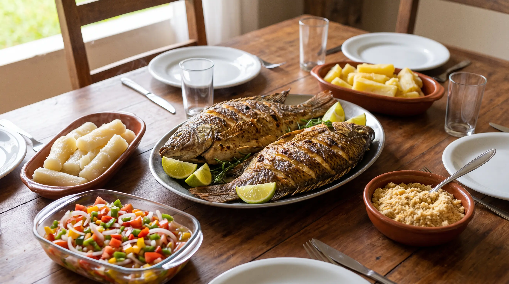

O Que Comer Durante o Defeso da Piracema: Como Manter o Peixe na Mesa sem Pesar no Rio

Quando chega outubro, quem mora às margens do Rio Paraguai já sabe: começa o defeso da piracema e a pesca nos rios fica restrita até janeiro. Para os amantes de peixe, a pergunta se repete todo ano: e agora, o que vou comer? A boa notícia é que um período de proteção do rio não precisa significar quatro meses de cardápio monótono. Com planejamento, criatividade e algumas boas escolhas, é possível manter o peixe na mesa, respeitar a natureza e ainda descobrir sabores novos. Neste guia, a equipe da Peixaria Rio Paraguai reúne alternativas práticas.
Primeiro, entenda o que está restrito
O defeso restringe a captura de peixes nos rios, principalmente das espécies migradoras que sobem para desovar. Não se trata de uma proibição de comer peixe. Peixes criados em tanques e viveiros regularizados, por exemplo, são produzidos em ambiente controlado e seguem disponíveis o ano todo. Já os peixes selvagens dependem de estoque legalmente constituído e da procedência declarada. Para entender melhor o contexto, leia nosso artigo sobre piracema e defeso.
Peixes de criação: aliados do defeso
Os peixes de tanque ganham destaque nessa época por dois motivos: oferta regular e baixo impacto sobre os rios. Os dois mais populares da região são:
- Tilápia: de carne branca, macia e sabor suave, é a favorita de quem tem crianças em casa ou não gosta de gosto forte de peixe. Fica ótima em filé empanado, assada com legumes, em moqueca e em bolinhos.
- Tambatinga: cruzamento entre tambaqui e pacu, tem carne saborosa e firme, com ótimo rendimento. A ventrecha (costelinha) é excelente na brasa, e o corte sem espinha facilita a vida de quem cozinha para muita gente.
Sobre as diferenças entre peixe de rio e de tanque, vale a leitura de Peixe de Rio vs. Peixe de Tanque: não existe "melhor" ou "pior" de modo absoluto, existe o peixe certo para cada preparo.
Receitas que funcionam com peixe de tanque
Tambatinga na brasa
A ventrecha de tambatinga responde muito bem ao fogo. Tempere com sal grosso, alho amassado, limão e um fio de óleo. Deixe descansar por 30 minutos, grelhe em brasa média por cerca de 25 minutos, virando uma vez, até a pele dourar e a gordura começar a derreter. Sirva com vinagrete, mandioca cozida e farofa.
Tilápia ao forno com legumes
Disponha filés de tilápia em uma assadeira untada, sobre uma cama de cebola, tomate e pimentão em rodelas. Tempere com sal, pimenta-do-reino, suco de limão e cheiro-verde, regue com azeite e asse a 200 °C por 20 a 25 minutos. É uma refeição completa, leve e rápida.
Caldo de peixe com a carcaça
Aproveite as carcaças e aparas para um caldo reforçado. Refogue cebola, alho e pimentão na banha ou no óleo, junte as carcaças, cubra com água, acrescente cheiro-verde e cozinhe por 30 minutos. Coe e use como base para pirão, sopas e arroz de peixe.
Varie as proteínas sem perder a identidade pantaneira
O defeso é uma boa época para explorar o lado "roça" da culinária mato-grossense. Alguns pratos que combinam com o clima quente de outubro a janeiro:
- Arroz carreteiro: carne seca, linguiça e temperos simples, prato único e econômico.
- Costela de porco caipira assada: perfeita para o almoço de domingo, acompanhada de mandioca e salada.
- Frango caipira ensopado: com mandioca e quiabo, é o conforto da cozinha caseira.
- Pirão com linguiça: um clássico para quem quer o gostinho do rio, usando o caldo preparado com carcaças de peixe de tanque.
Se quiser ideias, veja também a receita de arroz carreteiro e a costela de porco caipira no forno.
Conservação: compre bem e congele melhor
Quem se organiza antes economiza durante todo o defeso. Algumas orientações:
- Compre em quantidade, mas porcione antes de congelar. Embalagens individuais descongelam mais rápido e evitam desperdício.
- Use sacos próprios para congelador, retirando o ar. Quanto menos ar, menor o risco de queimadura pelo frio.
- Etiquete com a espécie, o corte e a data. Consuma em até três meses para manter textura e sabor.
- Descongele sempre na geladeira, nunca à temperatura ambiente. Mais detalhes em como descongelar peixe corretamente.
Se ainda tiver dúvidas sobre limpeza e armazenamento, o guia Como Limpar e Armazenar Peixe em Casa traz o passo a passo completo.
Como escolher bem o peixe nessa época
Em qualquer época, mas principalmente no defeso, vale observar sinais de frescor: olhos brilhantes e salientes, guelras vermelhas, carne firme que volta ao toque e cheiro de água limpa. Pergunte sempre a procedência. Um estabelecimento sério explica de onde vem o peixe, se é de criação ou selvagem, e informa o que tem em estoque sem pressionar a compra. Para um roteiro completo, leia como saber se o peixe está fresco.
Um defeso para ser saboreado
O defeso é um acordo coletivo para que o rio continue cheio. Em troca de alguns meses de cardápio ajustado, a região ganha cardumes maiores, pescarias melhores e uma culinária que segue viva. Com tilápia, tambatinga, carnes caipiras, feijão, mandioca e criatividade, a mesa pantaneira passa pelo período com fartura e sem culpa. E, em fevereiro, quando a pesca reabrir, o pintado e o pacu voltarão à panela com ainda mais sabor.
Fale com a Peixaria Rio Paraguai
Atendemos pelo WhatsApp (65) 99632-0873 e presencialmente na Rua Bom Jardim, 379, no Centro de Cáceres-MT. Consulte a disponibilidade do dia, escolha o corte e combine a retirada.